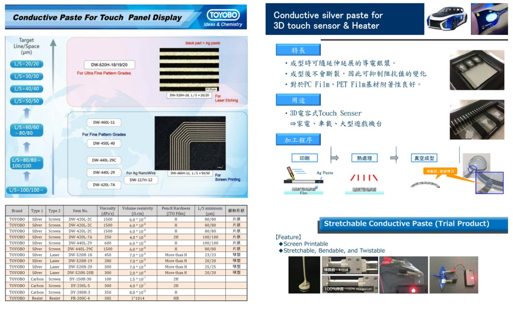
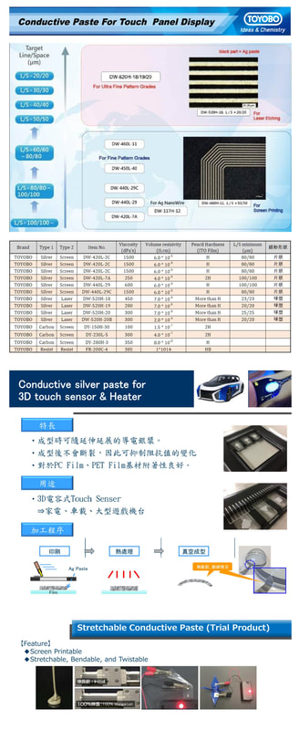

授權代理 / 核心合作夥伴
觸控面板與特用化學品 (TOYOBO 等)
我們提供各種應用於光電產業的高階樹脂與薄膜材料，具備高透光率與耐候性，適用於先進顯示器製程。
導電銀膠
高導電率，適用於精密印刷線路與元件接著。
絕緣塗層材料
優異的絕緣性與附著力，保護精密電子迴路。
TOYOBO 觸控面板導電漿料技術規格表
針對先進觸控顯示器與細線化需求（Ultra Fine Pattern），提供高精細度之網版印刷與雷射蝕刻銀漿，具備優異的體積電阻率與鉛筆硬度。

3D 觸控感測器與可伸縮導電銀漿 (Stretchable Paste)
主要特長 (Features)
- •成型時可隨延伸伸展的導電銀漿。
- •成型後不會斷裂，有效抑制阻抗值的變化。
- •對 PC Film、PET Film 基材具備優異附著性。
加工程序 (Process Flow)
標準流線化製程，確保 3D 曲面與車載應用良率：
1. 印刷
→
2. 熱處理
→
3. 真空成型

主要應用領域
- 觸控面板製造
- 太陽能電池模組
- LED 照明與封裝
- 穿戴式電子裝置